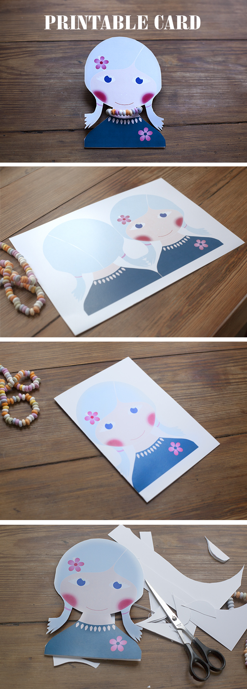

Wir haben schon einmal eine paar Gesichter mit Halskette veröffentlicht. Unsere Idee kommt von Gina, die einen großartigen Blog namens willlowday hat.
Heute zeigen wir Euch Welche mit ein wenig mehr Farbe :-).
Ausdrucken. In der Mitte falten. Rund um das Haar schneiden. Schreib im Innern was Du möchtest und lege einen Teil einer essbaren Kette um den Hals.
Fertig! Na ja, die Karten müssen noch übergeben werden ... Klicke hier um die Druckvorlagen zu erhalten.
Ya hemos publicado una vez unas caritas para imprimir con collar de chuches. Nuestra idea viene de Gina, que tiene un estupendo blog que se llama willlowday.
Hoy os dejamos unos retratos con un poco mas de color :-).
Imprime los. Dobla les por la mitad. Corta alrededor del pelo. Escribe dentro y pon una parte de un collar comestible alrededor del cuello.
Listo ! Bueno hace falta entregarla... Pincha aquí para tener los imprimibles.
We already have published once some faces to print with necklace sweets. Our idea comes from Gina, who has a great blog called willlowday.
Today we leave show you some portraits with some more color :-).
Print them. Fold them in half. Cut around the hair. Write something on the inside and put a part of an edible necklace around the neck.
Ready ! Well you need deliver it ... Click here to be printable.